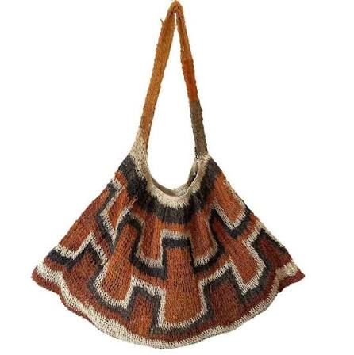
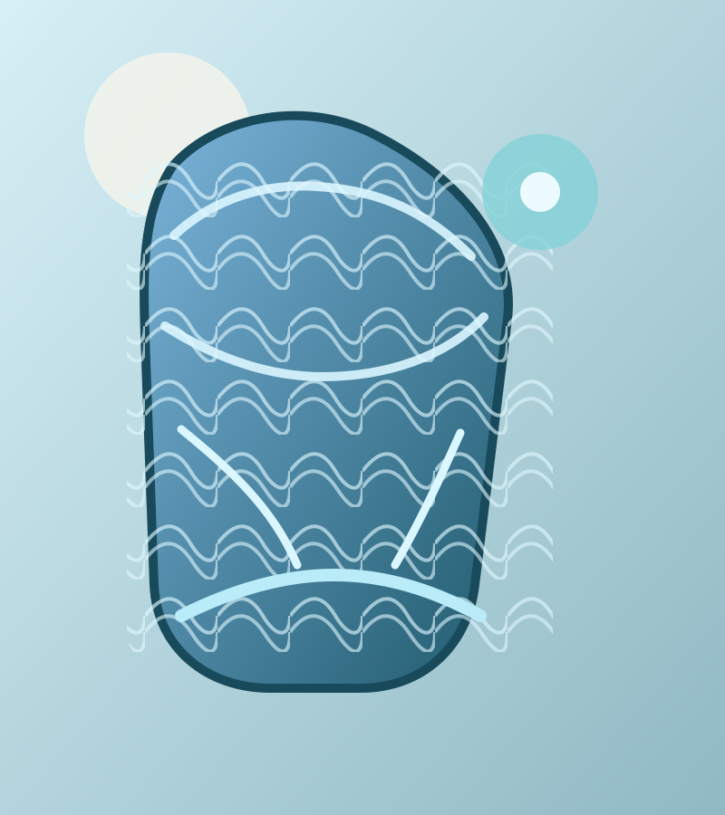
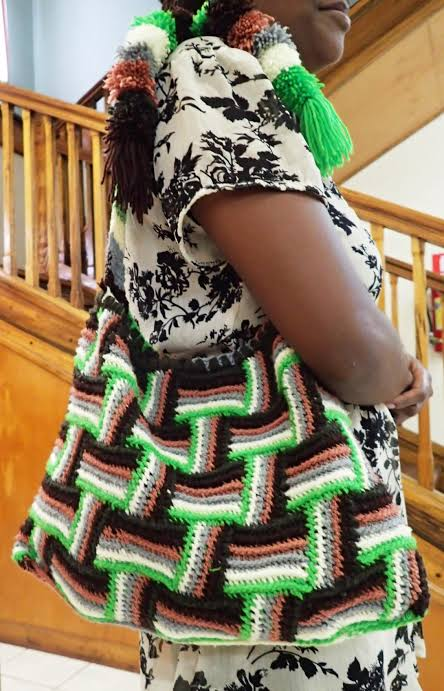
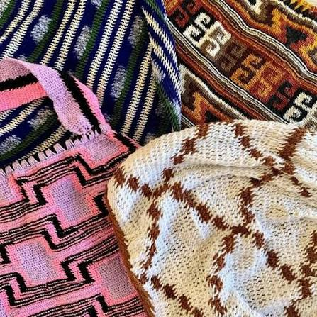
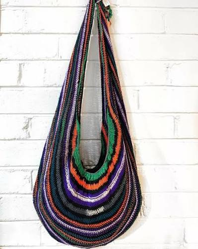
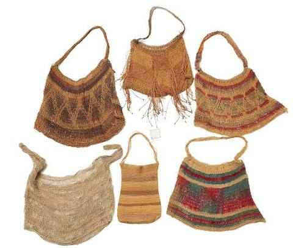
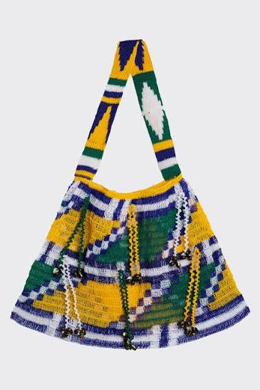
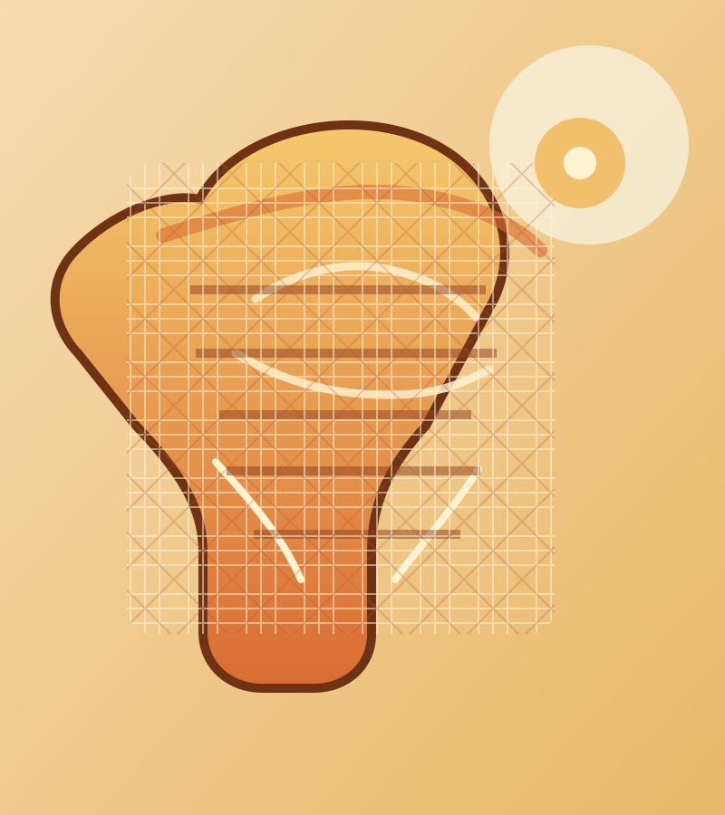

+Earth-toned Bilum
Flared handwoven shape with warm terracotta, cream and charcoal bands.
Handmade in Papua New Guinea
Bilums and traditional treasures woven by makers across Papua New Guinea. Each piece is one of one.

The collection
Explore bilums in distinct colours, patterns and shapes. Enquire for current price and availability.

+Flared handwoven shape with warm terracotta, cream and charcoal bands.

+A roomy shoulder bilum with vivid green, coral and dark geometric bands.

+A close look at the varied stitches, colours and motifs found across the collection.

+Long loop handle and layered stripes in deep, bright and natural colours.

+A selection of woven forms and natural-fibre patterns; ask us about available pieces.

+Bold blue, green and yellow checks finished with bright woven edging.

More than a bag
In Papua New Guinea, a bilum holds a lifetime: market mornings, new babies, garden harvests, the walk home. Kumul Bilum makes space for these living traditions to travel further, while making sure the hands that weave them are seen and valued.
Talk to our team ↗Come say hello
Browse the full collection, meet our team, and find a gift with a story behind it.
📍 Gordons Market, Port Moresby ✉ hello@kumulbilum.comReady to find your piece or discuss a partnership?
Open contact form ↗